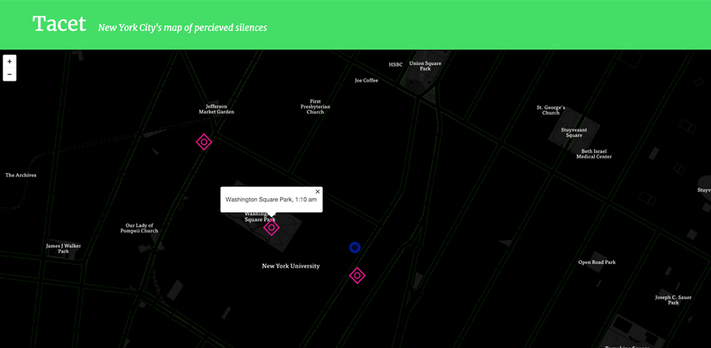
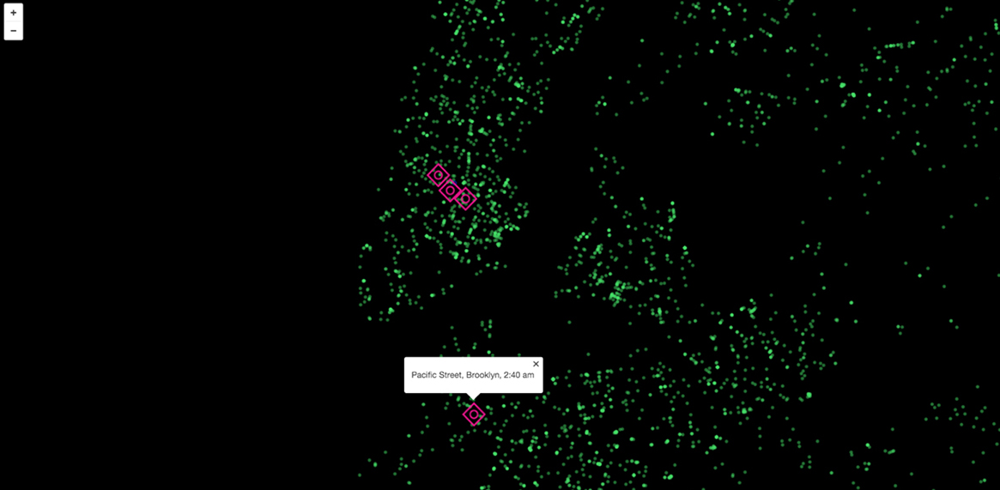

Tacet is a collection of New York City's percieved silences. It allows the people of the city to record their ideas of silence and add them to the map. Tacet is available both on web and mobile platforms allowing users to access and indulge in other peoples' silences whenever they want.

What does silence sound like? What does it mean to different people? Are some communities more tolerant than others? How can we measure and experience this difference?

I decided to collect the subjectivity of silence in sound by mapping the recordings against New York City's 311 Noise Complaint Data to understand how different communities accept 'noise'.
This project led me to many more questions: What is the relevance of the physical space in the experience of perceived silence? What is our visual association with silence? Is no movement representative of a silent space?
Does the duration of silence add or take away from its definition or experience?